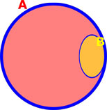

A. We may also say that x "belongs to" A, or that x "is in" A.
A. We may also say that x "belongs to" A, or that x "is in" A. By Bruce Hoppe
| If your browser does not support mathematical symbols, you will not see this document correctly. If "⊆" looks like a box in quotes instead of a lazy U, or this math-symbol-test-page looks like a bunch of boxes, then you need to find a browser that supports mathematical symbols. In our experience, Firefox works and Internet Explorer does not. |
Introduction to Network Mathematics provides college students with basic graph theory to better understand the Internet. Many passages are edited from Wikipedia, a few are from PlanetMath, and others are original writing by Bruce Hoppe, who teaches CS-103: "Introduction to Internet Technologies and Web Programming" at Boston University. This is a work in progress, first created in the spring semester of 2007, and now being used in the spring semester 2009.
Copyright © 2007, 2008, 2009 by Bruce Hoppe. Permission is granted to copy, distribute and/or modify these documents under the terms of the GNU Free Documentation License, Version 1.2 or any later version published by the Free Software Foundation; with no Invariant Sections, with no Front-Cover Texts, and with no Back-Cover Texts. A copy of the license is included in the section entitled "GNU Free Documentation License". If you believe a portion of this site infringes on your or anyone's copyright, please send us a note.
A set is a collection of objects. These objects are called the elements or members of the set. Objects can be anything: numbers, people, other sets, etc. For instance, 4 is a member of the set of all even integers. Clearly, the set of even integers is infinitely large; there is no requirement that a set be finite.
If x is a member of A, then we write x A. We may also say that x "belongs to" A, or that x "is in" A.
If x is not a member of A, then we write x  A.
A.
Two sets A and B are defined to be equal when they have precisely the same elements, that is, if every element of A is an element of B and every element of B is an element of A. Thus a set is completely determined by its elements; the description is immaterial. For example, the set with elements 2, 3, and 5 is equal to the set of all prime numbers less than 6.
If the sets A and B are equal, then we write A = B.
We also allow for an empty set, a set without any members at all. We write the empty set as { }.
Explicit Set Notation: The simplest way to describe a set is to list its elements between curly braces, known as defining a set explicitly. Thus {1,2} denotes the set whose only elements are 1 and 2. Note the following points:
Warning: This notation can be informally abused by saying something like {dogs} to indicate the set of all dogs, but this example would be read by mathematicians as "the set containing the single element dogs".
The simplest possible example of explicit set notation is { }, which denotes the empty set.
Implicit Set Notation: We can also use the notation {x : P(x)} to denote the set containing all objects for which the condition P holds, known as defining a set implicitly. For example, {x : x is a real number} denotes the set of real numbers, {x : x has blonde hair} denotes the set of everything with blonde hair, and {x : x is a dog} denotes the set of all dogs.
Given two sets A and B we say that A is a subset of B if every element of A is also an element of B. Notice that in particular, B is a subset of itself; a subset of B that isn't equal to B is called a proper subset.
If A is a subset of B, then one can also say that B is a superset of A, that A is contained in B, or that B contains A. In symbols, A ⊆ B means that A is a subset of B, and B ⊇ A means that B is a superset of A. For clarity, we use "⊆" and "⊇" for subsets (which allow set equality) and we use "⊂" and "⊃" are reserved for proper subsets (which exclude equality).
For example, let A be the set of American citizens, B be the set of registered students at Boston University, and C be the set of registered students in CS-103. Then C is a proper subset of B and B contains C, which we can write as C ⊂ B andB ⊃ C. If we allow the possibility that every BU student might be registered for CS-103, then we would write C ⊆ B or B ⊇ C to allow for this unlikely situation. Note that not all sets are comparable in this way. For example, it is not the case either that A is a subset of B nor that B is a subset of A.
Given two sets A and B, the union of A and B is the set consisting of all objects which are elements of A or of B or of both. It is written as A ∪ B.
The intersection of A and B is the set of all objects which are both in A and in B. It is written as A ∩ B.
Finally, the relative complement of B relative to A, also known as the set theoretic difference of A and B, is the set of all objects that belong to A but not to B. It is written as A \ B. Symbolically, these are respectively
A) or (x B)} A) and (x B)} A) and not (x B) }Notice that B doesn't have to be a subset of A for A \ B to make sense.
To illustrate these ideas, let A be the set of left-handed people, and let B be the set of people with blond hair. Then A ∩ B is the set of all left-handed blond-haired people, while A ∪ B is the set of all people who are left-handed or blond-haired or both. A \ B, on the other hand, is the set of all people that are left-handed but not blond-haired, while B \ A is the set of all people that have blond hair but aren't left-handed.
Venn diagrams are illustrations that show these relationships pictorally. The above example can be drawn as the Venn diagram at right:
Disjoint sets: Let E be the set of all human beings, and let F be the set of all living things over 1000 years old. What is E ∩ F in this case? No human being is over 1000 years old, so E ∩ F must be the empty set { }. When the intersection of any two sets is empty, we say those two sets are disjoint.
We measure the similarity of two non-empty sets A and B with the Jaccard Index: J(A,B) = |A ∩ B| / |A ∪ B|.
If A and B are disjoint then J(A,B)=0. If A=B then J(A,B)=1. (Assuming A and B are non-empty.)
Suppose A = {1,2,3,4,5,6}. Below we use J(A,B) to measure the similarity of set A with 5 different example sets B:
| Set B | Venn diagram of sets A and B | Jaccard index J(A,B) |
| B = {7,8,9,10,11,12} | J(A,B) = |{1,2,3,4,5,6} ∩ {7,8,9,10,11,12}||{1,2,3,4,5,6} ∪ {7,8,9,10,11,12}| = 0/12; Not at all similar |
|
| B = {4,5,6,7,8,9} |  |
J(A,B) = |{1,2,3,4,5,6} ∩ {4,5,6,7,8,9}| |{1,2,3,4,5,6} ∪ {4,5,6,7,8,9}|
= 3/9; Somewhat similar |
| B = {2,3,4,5,6,7} | J(A,B) = 5/7 Quite similar |
|
| B = {4} |  |
J(A,B) = 1/6 |
| B = {4,5,6,7, ... 25} | J(A,B) = 3/25 |
Intuitively, an ordered pair is simply a collection of two objects such that one can be distinguished as the first element and the other as the second element, and having the fundamental property that two ordered pairs are equal if and only if their first elements are equal and their second elements are equal.
We write an ordered pair using parentheses--not curly braces, which are used for sets. For example, the ordered pair (a,b) consists of first element a and second element b.
Two ordered pairs (a,b) and (c,d) are equal if and only if a = c and b = d.
In contrast, a set of two elements is an unordered pair which we write using curly braces and where there is no distinction between the first element and the second element. It follows that graph theory in order to study all kinds of networks. A graph is a set of objects connected by lines.
graph theory in order to study all kinds of networks. A graph is a set of objects connected by lines.
The objects in a graph are usually called nodes or vertices. The lines connecting the objects are usually called links or edges.
More formally, we define a graph G as an ordered pair G = (V,E) where
Example: The picture above represents the following graph:
Undirected graph: The edges of a graph are assumed to be unordered pairs of vertices. Sometimes we say undirected graph to emphasize this point. In an undirected graph, we write edges using curly braces to denote unordered pairs. For example, an undirected edge {2,3} from vertex 2 to vertex 3 is the same thing as an undirected edge {3,2} from vertex 3 to vertex 2.
Directed graph: In a directed graph, the two directions are counted as being distinct directed edges. In an directed graph, we write edges using parentheses to denote ordered pairs. For example, edge (2,3) is directed from 2 to 3 , which is different than the directed edge (3,2) from 3 to 2. Directed graphs are drawn with arrowheads on the links, as shown below:
Two vertices are called adjacent if they share a common edge, in which case the common edge is said to join the two vertices. An edge and a vertex on that edge are called incident.
See the 6-node graph below right for examples of adjacent and incident:
The neighborhood of a vertex v in a graph G is the set of vertices adjacent to v. The neighborhood is denoted N(v). The neighborhood does not include v itself. For example, in the graph below N(5) = {4,2,1} and N(6) = {4}.
The degree of a vertex is the total number of vertices adjacent to the vertex. The degree of a vertex v is denoted deg(v). We can equivalently define the degree of a vertex as the cardinality of its neighborhood and say that for any vertex v, deg(v) = |N(v)|.
The undirected graph at right has the following degrees:
| Vertex | Degree |
|---|---|
| 1 | 2 |
| 2 | 3 |
| 3 | 2 |
| 4 | 3 |
| 5 | 3 |
| 6 | 1 |
In a directed graph, we define degree exactly the same as above (and note that "adjacent" does not imply any direction or lack of direction). It is also important to define indegree and outdegree. Recall that any directed edge has two distinct ends: a head (the end with an arrowhead) and a tail. Each end is counted separately. The sum of head endpoints count toward the indegree of a vertex and the sum of tail endpoints count toward the outdegree of a vertex. The directed graph at right has the following degrees, indegrees, and outdegrees:
| Vertex | Degree | Indegree | Outdegree |
|---|---|---|---|
| 1 | 2 | 0 | 2 |
| 2 | 2 | 2 | 0 |
| 3 | 3 | 2 | 2 |
| 4 | 1 | 1 | 1 |
Pay particular attention to nodes 3 and 4 in the above table. If they seem confusing, try re-drawing the above graph using the "easier way to draw" illustrated previously.
The density of a graph G = (V,E) measures how many edges are in set E compared to the maximum possible number of edges between vertices in set V. Density is calculated as follows:
A path P = (v1,v2,v3,...,vk) is an ordered list of vertices such that
The first vertex of a path is called the origin and the last vertex is called the destination. Both origin and destination are called endpoints of the path.
Example: In the graph below, there are many paths from node 6 to node 1. One such path is P1 = (6, 4, 3, 2, 5, 1); another path from 6 to 1 is P2 = (6, 4, 5, 1).
Any node all by itself makes a trivial path. For example, (3) is the path that begins and ends at node 3. Another way to see (3) is as an ordered list with exactly one element: the node 3.
We say walk to denote an ordered list of vertices that follows the first requirement of a path but not the second. In other words, a walk may visit the same vertex more than once, but a path must never do so. This implies that every path is a walk, but some walks are not paths (i.e., any walk that visits a vertex more than once). A cycle is a walk such that the origin and destination are the same; a simple cycle is a cycle that does not repeat any vertices other than the origin and destination.
Examples: In the graph above, there are many walks from node 6 to node 1. Our previous examples P1 = (6, 4, 3, 2, 5, 1) and P2 = (6, 4, 5, 1) are also walks from node 6 to node 1. In addition, W1 = (6,4,3,4,3,5,4,3,2,5,1) and W2 = (6,4,5,1,5,1) are examples of walks from node 6 to to node 1 that are not paths.
The definitions of paths and walks can easily be extended to apply to directed graphs, in which case we use the terms directed path, directed walk, and directed cycle.
The length of a path or walk is the number of edges that it uses, counting multiple edges multiple times. In the graph below, (5, 2, 1) is a path of length 2 and (1, 2, 5, 1, 2, 3) is a walk of length 5. Also, the trivial path (3) has length 0.
The distance between two vertices x and y is written d(x,y) and defined as the length of the shortest path from x to y. The distance between any node and itself is 0. If there is no path from x to y (i.e., if x and y are in different connected components), then d(x,y) is infinity.
The average distance of a graph G is the average distance between all distinct pairs of vertices in G.
The diameter of a graph G is the maximum distance between any pair of vertices in G. If G is not connected, then the diameter of G is infinity.
Example 1: consider the graph G=(V,E) drawn below.

With a graph like the above example, diameter is similar to our geometric notion -- i.e., how far to get from one side of the circle to the other. In a graph context, we want to find the pair of nodes x and y such that the distance between x and y is not exceeded by the distance separating any other pair of nodes in the graph. One way to think about this is by filling in the table below, which shows the distance between each pair of nodes in G.
| Nodes | 1 | 2 | 3 | 4 | 5 |
| 1 | 0 | 1 | 2 | 2 | 1 |
| 2 | 0 | 1 | 2 | 2 | |
| 3 | 0 | 1 | 2 | ||
| 4 | 0 | 1 | |||
| 5 | 0 |
Because G is an undirected graph, we know that the distance from x to y is the same as the distance from y to x, and so we can ignore the shaded cells in the above table for the purposes of computing diameter and average distance.
After computing the distance between every possible pair of nodes, we see that the maximum distance in the above graph is 2. Therefore the diameter of the graph is 2.
The average distance of the graph is the average of all the non-zero cells in the above table. There are 10 such cells and the sum of the numbers in those cells is 15, making the average distance of G = 15/10 = 1.5.
Example 2: consider the graph G=(V,E) drawn below.
The table below shows the distance between each pair of nodes in G.
| Nodes | 1 | 2 | 3 | 4 | 5 | 6 | 7 | 8 | 9 | 10 |
| 1 | 0 | 2 | 3 | 3 | 3 | 2 | 4 | 1 | 2 | 1 |
| 2 | 0 | 3 | 3 | 3 | 2 | 4 | 3 | 2 | 1 | |
| 3 | 0 | 2 | 4 | 1 | 3 | 4 | 3 | 2 | ||
| 4 | 0 | 2 | 1 | 1 | 4 | 3 | 2 | |||
| 5 | 0 | 3 | 1 | 4 | 1 | 2 | ||||
| 6 | 0 | 2 | 3 | 2 | 1 | |||||
| 7 | 0 | 5 | 2 | 3 | ||||||
| 8 | 0 | 3 | 2 | |||||||
| 9 | 0 | 1 | ||||||||
| 10 | 0 |
The average distance of G is the average of all the non-zero cells in the above table. There are 45 such cells and the sum of the numbers in those cells is 164, making the average distance of G = 164/45 = 3.6444.
The diameter of G is the maximum value in any single cell in the above table. One cell stores value 5--because the distance from node 7 to node 8 is 5. There is no value larger than 5 in any other cell--no pair of nodes in G has distance more than 5. Therefore the diameter of G = 5.
It is often useful to consider only part of a graph. Induced subgraphs are one particularly convenient way to define a specific sub-part of a larger graph.
Graph G = (V,E) |
Subgraph induced by subset of nodes {1,2,3,4} |
Given a graph G=(V,E), an induced subgraph is defined by a subset of vertices S ⊆V. Then the nodes of the subgraph induced by S are simply the nodes in S, and the edges of the subgraph induced by S are all edges with both endpoints in S.
The upper graph pictured at right shows G=(V,E) with V={x: x is an integer from 1 to 8} and edges as drawn.
The lower picture shows the subgraph induced by the subset of nodes S={1, 2, 3, 4}. Notice that this induced subgraph consists of two connected components, even though the graph as a whole is a single connected component.
Another Example: In lecture we have discussed the Facebook friends network. We can write this as a graph using implicit notation as follows: G = (V,E), where V = {x: x is a person on Facebook} and E = {{x,y}: x V and y V and (x and y are friends on Facebook)}. The Facebook friends network is enormous, and so graph G is impossible to draw by hand; however, we can choose a small subset S of nodes in V and draw the graph induced by that subset S. This is exactly what the Touchgraph Facebook browser does: It lets you choose set S to be some number of your "Top Friends" on Facebook, possibly with the addition of yourself. Given this set S, Touchgraph displays a subgraph of the entire Facebook friends network: specifically, the subgraph induced by your chosen number of "Top Friends" (possibly with the addition of yourself).
Below is the subgraph of the Facebook friends network induced by the subset S={Patti, Jenny, Bill, Deborah}. This set S is exactly Bruce Hoppe's "Top 4 Friends" (which does not include Bruce Hoppe). The edges are hard to see but they are {{Patti, Jenny}, {Jenny, Bill}, {Bill, Patti}, {Bill, Deborah}}. There are no edges joining Deborah and Patti, or Deborah and Jenny, because these people are not Facebook friends.

Given an undirected graph, two vertices are connected if there is at least one path that joins them. For example, in the graph below, nodes 2 and 4 are connected. Nodes 1 and 6 are not connected.
Connected vs. Adjacent: Any two nodes that are adjacent are also connected (e.g., nodes 2 and 5 below). Two nodes that are connected may not be adjacent (e.g., nodes 2 and 4 below).
Furthermore, any node is connected to itself and is not adjacent to itself. For example, node 2 is connected to node 2 by the path (2)--i.e., the zero-length path that consists of nothing but the node 2. Node 2 is not adjacent to node 2 because there is no edge {2,2} (i.e., no edge {2}); and our prohibition against loops in graphs implies that no node can ever be adjacent to itself.

A connected graph is one where each vertex can reach every other vertex by one or more paths. A connected graph is said to consist of a single connected component. If a graph is not connected, then it consists of two or more connected components. The graph above consists of two connected components. Below is another example.

Given an undirected graph G=(V,E), we define a connected component to be a subgraph induced by node set S⊆V (i.e., GS = (S,ES)) with the following two properties:
Six Degrees describes connected components metaphorically using buttons as nodes and threads as edges. In this metaphor, a connected component is what you get when you lift one button off the floor--up comes not only that one button but also all the threads tied to that button, all the other buttons tied to those threads, etc. The above 2 mathematical properties of a connected component translate into this metaphor as follows:
For example, the graph G=(V,E) drawn at right is not a connected component because it violates property #1: it is not connected.
The subgraph induced by S={3,4,5,6} (drawn with dark nodes and edges below as GS = ({3,4,5,6},{{3,4},{3,5},{3,6},{4,5},{4,6},{5,6}}) is not a connected component because it violates property #2. There are edges in E that join nodes in S to node 2, which is a node not in S.
Clusters are important features of the Web. To the extent that Web builders tend to link to sites similar to their own sites, clusters of interlinked Web pages represent collections of content about meaningful subtopics.
Clusters are hard to define mathematically. We will define clusters somewhat informally, by using precise definitions of connected components and cliques as stepping stones to a less precise definition of clusters.
In the preceding section we defined a connected component in an undirected graph G=(V,E) to be a subgraph induced by node set S⊆V (i.e., GS = (S,ES)) with the following two properties:
To that definition we add the notion of clique. In an undirected graph G=(V,E) a clique is a subgraph induced by node set S⊆V (i.e., GS = (S,ES)) such that the density of GS is 1 (i.e., every pair of nodes in S is adjacent). Notice that the definition of clique does not depend on how many edges in E join nodes in S to nodes not in S.
Example: In the graph G drawn above, the subgraph induced by S={3,4,5,6} is a clique. Also, the subgraph induced by {2,6} is a (somewhat less interesting) clique. The subgraph induced by S={3,4,5,6} is the largest clique in G. Usually the largest clique in a graph is the most interesting clique in that graph.
The notion of cluster informally combines elements of our definitions of connected components and cliques. In an undirected graph G=(V,E) a cluster is a subgraph induced by node set S⊆V (i.e., GS = (S,ES)) with the following two properties:
Example: In the graph drawn below, the following subsets of nodes induce subgraphs that can fairly be called clusters (given our informal definition):
Not all connected components are clusters. In the graph drawn at right, even the subgraph induced by S={9,10,11,12,13} is arguably not a cluster, because the density of that induced subgraph is relatively low.
Not all cliques are clusters--even relatively large cliques. The subgraph induced by S={1,2,3,4} is not a cluster because every single one of those nodes is adjacent to node 5; there are too many edges joining nodes in S to nodes not in S. Even the largest clique in the above graph--the subgraph induced by S={1,2,3,4,5}--is arguably still not a cluster because node 7 is adjacent to so many nodes in S.
Finding clusters is one way to discover meaningful collections of Web pages. Another way is based on the idea that Web pages x and y are similar to the extent that they have similar network neighborhoods -- even if x and y are not adjacent to each other. This is the idea behind structural equivalence.
Consider G=(V,E) drawn below. (Edge set E includes both black and grey edges; we will get to that distinction momentarily.) Suppose G is a subgraph of the Facebook friends network and you are logged in as node 26. Which node will Facebook suggest first as someone you may know? Facebook will not bother to suggest someone you already know; instead, it will look for someone who is not yet a Facebook friend of yours but who has many of the same Facebook friends that you have. For example, node 29 stands out as "someone you may know" if you are node 26. By comparison, node 27 appears to be someone that node 26 probably does not know, judging by the different sets of friends that nodes 26 and 27 keep. In the middle ground, nodes 28, 30, and 31 each have some neighbors in common with node 26 and other neighbors that are distinct from those of node 26. Structural equivalence is a metric that can be used to rank these nodes according to how similar their neighborhoods are to that of node 26.
Given two nodes x and y in a graph, the Jaccard index provides a simple and useful way to compare the similarity of their neighborhoods. Recall that the Jaccard index measures the similarity of two sets and is defined J(A,B) = |A ∩ B| / |A ∪ B|.
We define the structural equivalence of two nodes x and y as the similarity of their neighborhoods, as measured by the Jaccard index:
SE(x,y) = J(N(x),N(y)) = |N(x) ∩ N(y)| / |N(x) ∪ N(y)|.
This equals 1 when x and y have identical neighborhoods and 0 when the neighborhoods of x and y are disjoint.
Consider graph G drawn above and suppose x=26; then N(6) = {1,2,3,4,5,6}. Below we compute the structural equivalence of x with 5 example nodes y: 27, 28, 29, 30, and 31.
| Node y | N(y) = Neighborhood of y | SE(x,y) = J(N(x),N(y)) |
| 27 | {7,8,9,10,11,12} |
J(N(x),N(y)) = |{1,2,3,4,5,6} ∩ {7,8,9,10,11,12}||{1,2,3,4,5,6} ∪ {7,8,9,10,11,12}| = 0/12; Not at all similar |
| 28 | {4,5,6,7,8,9} |
J(N(x),N(y)) = |{1,2,3,4,5,6} ∩ {4,5,6,7,8,9}| |{1,2,3,4,5,6} ∪ {4,5,6,7,8,9}|
= 3/9; Somewhat similar |
| 29 | {2,3,4,5,6,7} |
J(N(x),N(y)) = 5/7; Quite similar |
| 30 | {4} |
J(N(x),N(y)) = 1/6 |
| 31 | {4,5,6,7, ... , 25} |
J(N(x),N(y)) = 3/25 |
To emphasize the underlying congruence between measuring the similarity of nodes using structural equivalence and the similarity of sets using the Jaccard index, we have arranged the above examples of structural equivalence to correspond exactly to the table of examples illustrating the Jaccard index.
Structural equivalence, social bookmarking, and collaborative filtering: By far the most important Web application of structural equivalence is its use by sites such as Delicious and Amazon. When you look up a specific tag on Delicious and it recommends related tags, that recommendation is based on structural equivalence. When you shop on Amazon and it recommends other items you might also like to buy, that recommendation is based on structural equivalence. Websites that work in this way are often said to use collaborative filtering.
Our above definition of structural equivalence works the same in both the Facebook "someone you may know" examples and the Delicious/Amazon "other things you may be interested in" collaborative filtering scenario. However, the underlying graph used in the Delicious/Amazon scenario is a special kind of graph, often called an affiliation network or a bipartite graph.
We define bipartite graphs formally in the next section. For now, we simply re-draw the above example graph without any of the grey edges. The new graph is G'=(V,E'):
The graph above not only omits the grey edges of E, but also distinguishes nodes by two types. In a Delicious example, the red squares would be tags, the blue circles would be Web pages, and the links would represent bookmarks on Delicious that associate a tag with a Web page. In an Amazon example, the red squares would be books, the blue circles would be Amazon users, and the links would represent purchases.
Unlike Facebook, where any node can invite any other node to be friends, Delicious and Amazon do not much care (relatively speaking) about any edges other than those between red squares and blue circles. By eliminating edges that join blue circles to blue circles, and edges that join red squares to red squares, we get a graph that yields to much simpler algorithms while still modeling the connections that are most important to the task at hand (i.e., recommending new items of interest).

Another way to think of a bipartite graph is by drawing the red nodes on one side of the picture and the blue nodes on the other side of the picture:

 saying the same thing. For example, the graph below is non-bipartite:
saying the same thing. For example, the graph below is non-bipartite:One application of bipartite networks is the organization of user-created tags, such as the tags in del.icio.us. Together with the website URLs they are associated with, these tags form a bipartite network. For example, the yellow nodes below left are tags on del.icio.us, and the orange nodes below right are some of the URLs associated with these tags:

Even a machine that doesn't understand the tag-words themselves can analyze how the tag-words relate to each other based on how others associate those tags with website URLs.
The simplest indicator of tag relatedness is the group interlock network, which is explained in Six Degrees. Unfortunately, the group interlock network is too crude for many purposes, because it provides only a yes/no indicator and does not indicate relative amount of relatedness.
A more useful measurement of tag (or node) relatedness is based on structural equivalence, which we defined previously.
The structural equivalence of two tags is 1 when they have identical website associations and 0 when two tags have not a single common website associated with them.
Examples based on the above yellow & orange graph:
The structural equivalence of YouTube and Video is
|N(YouTube) ∩ N(Video)| / |N(YouTube) ∪ N(Video)|
= |{A, B, C, F} ∩ {A, B, C, D, E, F}| / |{A, B, C, F} ∪ {A, B, C, D, E, F}|
= |{A, B, C, F}| / |{A, B, C, D, E, F}|
= 4 / 6
= 2/3
The structural equivalence of MySpace and Video is
|N(MySpace) ∩ N(Video)| / |N(MySpace) ∪ N(Video)|
=|{H, I, K} ∩ {A, B, C, D, E, F}| / |{H, I, K} ∪ {A, B, C, D, E, F}|
=|{ }| / |{A, B,C, D, E, F, H, I, K}|
= 0 / 9
= 0
A tree is a graph in which any two vertices are connected by exactly one path.
Here are three different trees made from the same set of nodes:

In computer science, we often use trees for hierarchical organization of data, in which case we use rooted trees.

In the above tree, node 3 is specially designated as the root of the tree. Every other node in the tree is implicitly ranked by its distance from the root.
For any edge in a rooted tree, one end of the edge must be closer to the root than the other. We call the node closer to the root the parent of the other node, and we call the node farther from the root a child of its parent node. For example, nodes 9 and 4 are children of node 3. Similarly, nodes 10, 6, and 5 are all children of node 4. (And node 2 is the only child of node 9.) Any node in a rooted tree may have any number of children (including zero). A node with no children is called a leaf (examples leaf nodes are 1, 10, 7, and 5). Every node except the root node must have exactly one parent. For example, the parent of node 7 is node 6. Note that the above rooted tree is undirected, but each edge in the rooted tree has an implicit direction based on the parent-child relationship represented by that edge.
Any node of a tree can be a valid root of that tree. For example, if we decided that node 6 was actually the central anchor of the above network, we could re-root the exact same tree at 6 instead of 3:

Check and see that the two graphs above have exactly the same sets of nodes and edges. What happens to parent-child relationships when a tree is re-rooted?
In terms of its graph theoretic properties, a rooted tree is equivalent to the traditional hierarchical organizational chart:

The Division Officer at the top of the above hierarchy would probably argue that changing the root of the corresponding tree is a bad idea. However, if we are using trees to connect computers or concepts rather than people, we are less likely to encounter resistance when considering different alternatives for designating the root of a tree.

Mathematical InductionWhen you write a computer program, how do you know it will work? A mathematical proof is a rigorous explanation of such a claim. (Example claim: "MapQuest finds the shortest path between any two addresses in the United States.") A proof starts with statements that are accepted as true (called axioms) and uses formal logical arguments to show that the desired claim is a necessary consequence of the accepted statements.Mathematical induction (or simply induction) is one of the most important proof techniques in all of computer science. Induction is a systematic way of building from small example cases of a claim to show that the claim is true in general for all possible examples. Every proof by induction has two parts:
Suppose we want to prove that the maximum possible number of edges in an undirected graph with n nodes is n*(n-1)/2. Let's prove this by induction:

The maximum number of edges incident to node i+1 is simply i (which would happen if node i+1 is adjacent to every other node in the graph). Adding the above two terms gives us the maximum number of edges in a graph with n=i+1 nodes equal to
Voila! Check for yourself that we have completed both the base case and the inductive step. We now have a complete proof by induction that the maximum number of edges in a graph with n nodes is n*(n-1)/2. |

# edges in blue sub-tree = # edges in green sub-tree = # edges in yellow sub-tree = |
|Vblue| - 1 |Vgreen| - 1 |Vyellow| - 1 |
# edges in all sub-trees = |
i - 3 |
|E| = |
i - 3 + 3 = i |

We will apply Kruskal's algorithm to the graph above. Recall that set F initially includes every edge. Set T is initially empty. As we add edges to T in the example below, we color those edges green.
|
This is our original graph. The numbers near the arcs indicate their weight. None of the arcs are highlighted. |
|
{A,D} and {C,E} are the shortest arcs, with length 5, and {A,D} has been arbitrarily chosen, so it is highlighted. |
|
However, {C,E} is now the shortest arc that does not form a cycle, with length 5, so it is highlighted as the second arc. |
|
The next arc, {D,F} with length 6, is highlighted using much the same method. |
|
The next-shortest arcs are {A,B} and {B,E}, both with length 7. {A,B} is chosen arbitrarily, and is highlighted. The arc {B,D} has been highlighted in red, because it would form a cycle (A,B,D,A) if it were chosen. |
|
The process continutes to highlight the next-smallest arc, {B,E} with length 7. Many more arcs are highlighted in red at this stage:
|
|
Finally, the process finishes with the arc {E,G} of length 9, and the minimum spanning tree is found. |
PageRank is the algorithm behind Google. According to Tim Berners-Lee, PageRank and its kin "form the heart of the critical crawlers and rank-assessment algorithms behind Web search."
PageRank relies on the uniquely democratic nature of the web by using its vast link structure as an indicator of an individual page's value. In essence, Google interprets a link from page A to page B as a vote, by page A, for page B. But, Google looks at more than the sheer volume of votes, or links a page receives; it also analyzes the page that casts the vote. Votes cast by pages that are themselves "important" weigh more heavily and help to make other pages "important".
In other words, a PageRank results from a "ballot" among all the other pages on the World Wide Web about how important a page is. A hyperlink to a page counts as a vote of support. But, as mentioned above, not all votes count equally.
The core network mathematical concept in PageRank is the notion of centrality. This is an intuitive notion that is surprisingly hard to pin down mathematically. For example, which node is the most central in the following graph?

There is no one right answer to the question, because the question is too vague. There are many different ways to define centrality more precisely. Here are three important ones, all of which rely critically on the direction of links (something we have largely glossed over until now):
The PageRank formula is described and illustrated with examples and an interactive PageRank calculator at http://www.webworkshop.net/pagerank.html. You can also find a rigorous mathematical introduction in Wikipedia (not for the faint of heart).
WebWorkshop writes the PageRank formula in a manner that is compact but subtle. We restate the formula here and then introduce an easier, simplified forumulation. We begin by defining a damping factor d to be a fixed coefficient at least 0 but no more than 1. (Google uses d=0.85.) Then for any graph, we define the PageRank of each of its nodes as follows:
For any node x, let
Then PageRank(x) =
|
Computing PageRank from the above definition presents both major and minor difficulties:
Another problem with the above definition of PageRank is understanding the damping factor, which is rather obtuse. Here is the best way we know to explain the damping factor d:
One way to consider PageRank is as a kind of probability distribution. Suppose a Web surfer starts at a random page and clicks at random for a while (i.e., clicking on any link that happens to be on the current page, etc.). Occasionally the Web surfer types in a new URL (randomly chosen from all Web pages) instead of link-clicking. Eventually the surfer stops at his "destination" page. The PageRank of a Web page x is essentially the probability that x will be the destination page of that surfer's random walk of clicking and URL-typing. In this scenario, the damping factor d is essentially the probability that the "random Web surfer" clicks a link instead of typing in a new URL. So...
|
Here we present HopRank as a simpler version of PageRank. The HopRank function takes two inputs: a Web page x and a positive integer i. It is then written HopRanki(x). There are three good ways to interpret HopRanki(x):
Perhaps the easiest way to understand HopRank is not by interpreting it (as above), but by showing how it is calculated, which we do below. The simplest case of HopRanki(x) is when i=1:
HopRank1(x) = InDegree(x)
The above equality is simply the definition of HopRank1(x). From that starting point, we will proceed iteratively and define HopRank2 based on HopRank1, then HopRank3 based on HopRank2, and so forth.
Given a directed graph G=(V,E), we lay the foundation of the HopRank calculation by defining the InNeighborhood of a node x ∈ V to be
InN(x) = |
the set of all nodes that have directed edges into x |
= |
{y: (y,x) ∈ E} |
Then HopRank1(x) = |InN(x)| = the indegree of x. Below we illustrate this using same the 6-node graph as above:
|
|
HopRank1 is a very local measure of node centrality. We can measure a slightly more system-wide sense of node centrality by defining HopRank2 as follows: For any node x, HopRank2 of x is the sum of the HopRank1's of all nodes in InN(x).
| Node x |
InN(x) |
HopRank1(x) |
HopRank2(x) |
| 1 |
{4,6} |
2 |
7 = 3+4 |
| 2 |
{3} |
1 |
1 = 1 |
| 3 |
{2} |
1 |
1 = 1 |
| 4 |
{3,5,6} |
3 |
6 = 1+1+4 |
| 5 |
{4} |
1 |
3 = 3 |
| 6 |
{1,2,3,5} |
4 |
5 = 2+1+1+1 |
We can then repeat the above process to calculate HopRank3 based on HopRank2, then HopRank4 based on HopRank3, etc. Below is a table of five successive calculations of HopRanki, based on the same graph as above:
| Node x |
InN(x) |
HopRank1(x) |
HopRank2(x) |
HopRank3(x) |
HopRank4(x) |
HopRank5(x) |
| 1 |
{4,6} |
2 |
7 |
11 |
21 |
38 |
| 2 |
{3} |
1 |
1 |
1 |
1 |
1 |
| 3 |
{2} |
1 |
1 |
1 |
1 |
1 |
| 4 |
{3,5,6} |
3 |
6 |
9 |
19 |
29 |
| 5 |
{4} |
1 |
3 |
6 |
9 |
19 |
| 6 |
{1,2,3,5} |
4 |
5 |
12 |
19 |
32 |
Below we redraw the same table, highlighting exactly how the row for node 4 is calculated. Because InN(4) = {3,5,6}, in each iteration i the calculation of HopRanki(4) adds the HopRank(i-1) of nodes 3, 5, and 6:
The above tabular calculation leads us to our most concise complete definition of HopRanki(x). Again, we assume we are given a directed graph G=(V,E), a node x∈V, and a positive integer i:
| if i = 1: | HopRank1(x) = |
|InN(x)| |
|
| if i > 1: | HopRanki(x) = |
y∈InN(x) |
(HopRank(i-1)(y)) |
Looking back at the tabular calculation, notice that relative rankings of nodes change from column to column in the table. Sometimes node 6 is ranked highest; sometimes node 1 is ranked highest. After "enough" iterations, the rank order of relative nodes will stabilize. Even more importantly, the relative ratios of HopRanki for different nodes will stabilize.
In other words, when the value of i is "big enough," then the relative ratios of HopRanki for different nodes will not change in any significant way from iteration i to iteration i+1. According to http://www.webworkshop.net/pagerank.html, Google uses 40-50 iterations to calculate its version of PageRank. So we can informally say that HopRank50 will give us a good simplified version of PageRank, where the relative rankings of nodes are stable.